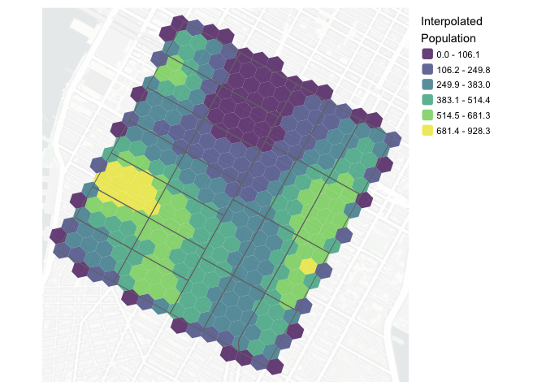

pycnogrid provides tools for interpolating more aggregate polygon-level extensive data (e.g. population, employment, or event counts) to a range of alternative grid types using pycnophylactic interpolation.
Often administrative and statistical reporting units do not align with the geographic supports needed for analysis. They can also introduce sensitivity to the scale and zoning of spatial units, which are central to the modifiable areal unit problem (MAUP). Tobler’s pycnophylactic interpolation method can potentially help to address this mismatch by transferring polygon totals to an alternative regular grid while preserving represented source totals and smoothing estimates across neighbouring cells.
Existing implementations of Tobler’s pycnophylactic interpolation include the {pycno} package for R and the {tobler} module within the larger Python Spatial Analysis Library (PySAL). These implementations focus on transferring source data to target raster cells. {pynogrid} extends Tobler’s pycnophylactic interpolation approach beyond regular raster lattices and supports a range of discrete global grid systems (DGGSs), including H3, A5, S2, and ISEA grids, as well as rasters and other local grids. The flexibility of the underlying interpolation approach makes it possible to create spatially smooth, mass-preserving representations of aggregate data with area or shape preserving geographic supports.
For a full introduction to the interpolation workflow, grid options, and output interpretation, see the getting started vignette.
Installation
You can install the development version of pycnogrid from GitHub:
# install.packages("remotes")
remotes::install_github("higgicd/pycnogrid")Example
This example interpolates census tract population counts for a small area of New York City to an H3 grid at resolution 10:
out <- nyc_ct_small |>
pycnogrid::to_grid(
value_col = "populationE",
grid_type = "h3",
resolution = 10
)The returned object is an {sf} object containing the target-cell geometries, the interpolated count, an estimated density, and the proportion of each cell covered by the source geography. The map below shows the interpolated population counts:

How it works
For a polygon layer containing source totals, pycnogrid:
- creates a target grid covering the source geography;
- allocates each source total to intersecting target cells;
- smooths estimated densities across neighbouring cells; and
- repeatedly rescales the estimates so that the original source totals are preserved.
The resulting grid can be used in downstream mapping, accessibility, spatial modelling, and sensitivity analyses.
Key arguments
The main function, to_grid(), provides several options for specifying the target geography and interpolation process:
-
sourceis the source {sf} polygon layer containing the totals to be interpolated. Given the geometry calculations performed by the tool, only inputs with projected coordinate reference systems are accepted. -
value_colis the column insourcecontaining the count variable to be smoothed and preserved -
id_colis an optional column uniquely identifying each source polygon, if omitted, an internal identifier is created -
grid_typespecifies the target grid system. Supported options are H3, A5, S2, ISEA grids with aperture-3, 4, and 7, and raster-derived polygon cells -
resolutioncontrols the size of the target grid cells. Its interpretation depends on the selected grid type -
cell_inclusiondefines how candidate grid cells are selected for interpolation. With “intersect”, cells are included if they intersect a source polygon. With “centroid”, cells are included only when their centroid falls inside a source polygon. -
cell_allocationdefines how source totals are allocated to grid cells. With “area”, values are allocated in proportion to the area of overlap between source polygons and grid cells. With “centroid”, each grid cell is assigned to the source polygon containing its centroid. -
nb_orderspecifies the neighbourhood order used during smoothing. A value of 1 uses immediately adjacent cells, while larger values extend the smoothing neighbourhood outwards from a given cell. -
max_itersets the maximum number of smoothing iterations. If set to 0, the function returns the initial allocation without iterative smoothing. -
tolerancedefines the convergence threshold. Iteration stops when the relative change in estimated cell densities falls below this value. -
include_selfcontrols whether each cell includes its own current value when calculating the neighbourhood mean during smoothing. -
missing_policydetermines how the function handles source polygons that receive no target grid cells, which might arise due to a mismatch in source polygon sizes and target grid cell resolutions. “abort” stops with an error, “warn” returns a warning, and “ignore” proceeds silently.
For most applications, cell_inclusion = "intersect" and cell_allocation = "area" provide the most geographically complete initial representation because all source–target intersections are retained and source totals are allocated according to their area of overlap.
Interpreting the output
Interpolated values are estimates of the amount of the source total associated with each target cell. With cell_allocation = "area", the output for partially covered target cells represents the amount estimated within the portion of the cell that overlaps the source geography. In this sense, the method does not extrapolate counts beyond source boundaries. The output includes:
out |> glimpse()
#> Rows: 336
#> Columns: 7
#> $ h3 <chr> "8a2a100d2db7fff", "8a2a100d2d97fff", "8a2a100d2d87f…
#> $ geometry <POLYGON [m]> POLYGON ((585062.6 4511955,..., POLYGON ((58…
#> $ .tid <int> 1, 2, 3, 4, 5, 6, 7, 8, 9, 10, 11, 12, 13, 14, 15, 1…
#> $ pycno_populationE <dbl> 103.085325, 183.514968, 32.247510, 11.821690, 41.908…
#> $ pycno_density <dbl> 0.0068098960, 0.0121233098, 0.0021303414, 0.00078095…
#> $ pycno_coverage <dbl> 1.0000000, 1.0000000, 1.0000000, 1.0000000, 1.000000…
#> $ pycno_iter <int> 27, 27, 27, 27, 27, 27, 27, 27, 27, 27, 27, 27, 27, …with:
-
pycno_<value_col>: the interpolated extensive value for each target cell -
pycno_density: the estimated density used during the smoothing process -
pycno_coverage: the proportion of the target-cell area covered by the source geography -
pycno_iter: the number of smoothing iterations used
Additional information about convergence, represented input totals, missing source areas, grid settings, and neighbourhood settings is stored as attributes on the returned object.
Important considerations
The pycnophylactic interpolation algorithm implemented in pycnogrid is intended for extensive variables: quantities that can be meaningfully divided and summed across space, such as population, households, jobs, trips, or service counts.
It should not be used to directly interpolate intensive variables such as median income, percentages, rates, or averages. Where appropriate, interpolate the underlying numerator and denominator separately, then calculate the rate or ratio on the resulting grid.
Grid choice remains an analytical decision. Different grids vary in cell area, shape, orientation, hierarchy, adjacency structure, and suitability for tasks such as spatial aggregation, indexing, visualization, or accessibility analysis. Moreover, options related to cell inclusion, allocation, neighbourhood order, etc., can all meaningfully shape the nature of the interpolation and smoothing. pycnogrid facilitates comparison across these alternative spatial support systems and modelling choices rather than treating any single grid as universally optimal.